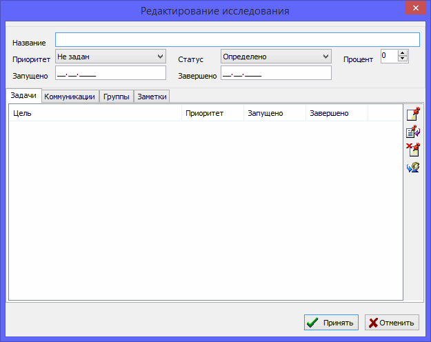

You use research records to manage research main directions and priority of those directions. You create a line of research for some family branch and assign a relative priority for this research. Then you track a period of time when the research is in progress, check the current research status, and its completion state.
You can split research up into individual tasks, add communication with relatives or other researchers using a correspondence record, and add social groups to easily find all people that were researched under this research direction.
You add a description of the research progress, and associated comments, using text notes.

There is a uniting table on the "Researches" tab of the main working window which includes all researches available in the database. A research summary to the right of the table shows all information about the selected research.
See also: Task, Correspondence, Group, Note.